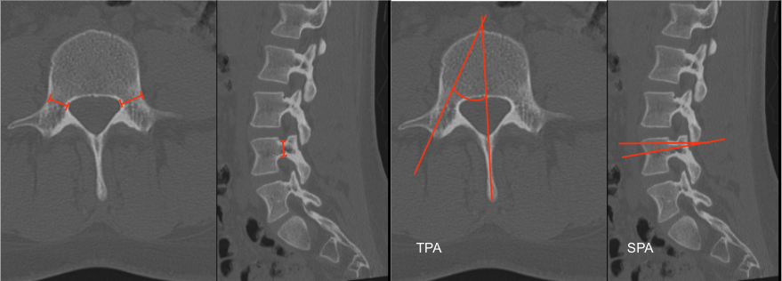

Adapted from: Feger J, Campos A, Murphy A, et al. CT lumbar spine (protocol). Reference article, Radiopaedia.org (Accessed on 03 Jan 2026) https://doi.org/10.53347/rID-90041
1) Description of Measurement
Lumbar pedicle morphometry quantifies the size and orientation of the pedicles and is essential for safe pedicle screw placement. Measurements include:
2) Instructions to Measure
A. Pedicle Width (Transverse Diameter) – Axial CT
B. Pedicle Height (Sagittal Diameter) – Sagittal CT
C. Transverse Pedicle Angle – Axial CT
D. Sagittal Pedicle Angle – Sagittal CT
3) Normal vs. Pathologic Ranges
Key point:
Pedicle width < 5 mm significantly increases risk of cortical breach.
4) Important References
Zindrick MR, Wiltse LL, Doornik A, et al. Analysis of the morphometric characteristics of the thoracic and lumbar pedicles. Spine (Phila Pa 1976). 1987 Mar;12(2):160-6. doi: 10.1097/00007632-198703000-00012.
Sugisaki K, An HS, Espinoza Orías AA, et al. In vivo three-dimensional morphometric analysis of the lumbar pedicle isthmus. Spine (Phila Pa 1976). 2009 Nov 15;34(24):2599-604. doi: 10.1097/BRS.0b013e3181b52a37.
Coscia A, Paige K, Hostetter M, et al. Transverse Pedicle Angle Is Associated With Pelvic Incidence and Increased in Lumbar Isthmic Spondylolisthesis. Global Spine J. 2022 Apr;12(3):359-365. doi: 10.1177/2192568220951190.
Liu L, Wang H, Wang Q, et al. A Study of the Sagittal Angle of Lumbar Bicortical Pedicle Screws from the Anatomic Perspective of the Lumbar Artery. World Neurosurg. 2019 May;125:e435-e441. doi: 10.1016/j.wneu.2019.01.100.
5) Other info....
Always measure each pedicle individually — asymmetry is common in deformity and degenerative disease.
Use the smallest pedicle width to select screw diameter (typically 80% of pedicle width).